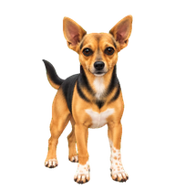
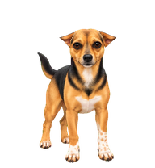

Animation library
RON-013 · ENDPOINT CHECKPOINT
Ears pulled back
Candidate for pose and style review. The transition will follow after this
pose is approved.
Compare poses
Original neutral

Ears-back candidate

Closer look
Original neutral · enlarged
Ears-back candidate · enlarged
Review the backward ear angle, pointed shape, attachment and Ronnie’s
original character details. See review notes for
preservation checks and any limitations.